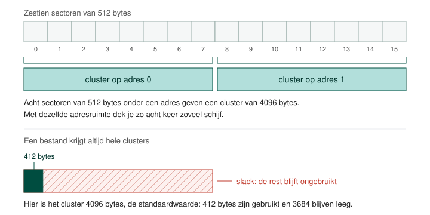
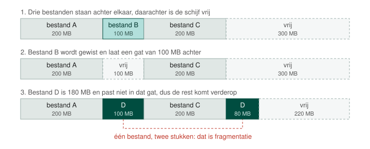
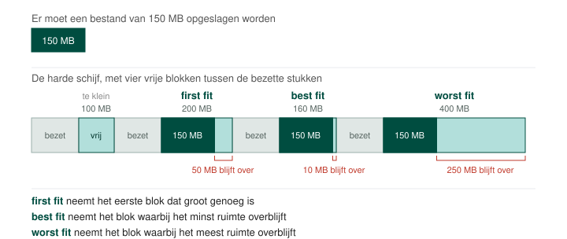
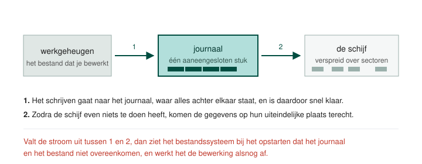

Met een partitie alleen kan een besturingssysteem nog niets. Het moet ook weten op welke plaatsen een bestand staat, en die boekhouding zit in het bestandssysteem waarin je de partitie formatteert. Welk bestandssysteem je kiest, bepaalt op welk besturingssysteem de partitie bruikbaar is, hoe groot ze mag zijn en hoe groot één bestand erin mag zijn.
Vergelijk een bestandssysteem met de inhoudstafel van een boek. In de inhoudstafel staat op welke bladzijde een hoofdstuk begint; in een bestandssysteem staat op welke sectoren een bestand staat. Formatteren is die inhoudstafel aanleggen, en het is wat er na het partitioneren nog moet gebeuren voor je een partitie kan gebruiken.
Hoe meer bestanden er op een schijf staan, hoe meer plaatsen die inhoudstafel moet kunnen aanduiden. Het aantal bits dat een bestandssysteem voor zo'n adres gebruikt, bepaalt dus meteen hoe groot een partitie en een bestand mogen worden. Met 8 bits adressering en sectoren van 512 bytes kom je aan 28 × 512 bytes, ofwel 131 072 bytes, en verder geraak je niet.
Een sector is de kleinste eenheid waarin een schijf zijn gegevens bewaart, klassiek 512 bytes groot. Het bestandssysteem adresseert die sectoren niet stuk voor stuk: het groepeert ze in clusters en geeft één adres aan zo'n groep.
Koppel je acht sectoren aan één adres, dan dekt dezelfde adresruimte acht keer zo veel schijf, en wordt de maximale partitiegrootte acht keer groter. De prijs betaal je bij kleine bestanden. Een cluster is de kleinste hoeveelheid die aan één bestand toegewezen wordt, dus een bestand van 412 bytes in een cluster van 64 kB laat bijna 64 kB ongebruikt. Die verloren ruimte heet slack.

Bij het formatteren geef je de clustergrootte op. De standaardwaarde is 4096 bytes, ofwel 4 kB. Heb je veel kleine bestanden, dan kies je kleiner; heb je vooral grote bestanden, dan kies je groter.
Wanneer een bestand groeit terwijl er achter zijn laatste cluster al iets anders staat, komt de rest ergens anders op de schijf terecht. Zo raakt een bestand verspreid over de schijf, en dat heet fragmentatie. Bij een klassieke harde schijf met een draaiende platter moet de arm zich dan per stuk opnieuw positioneren, en elke herpositionering kost seek time en rotational latency. Bij een SSD staan er geen onderdelen te bewegen en levert defragmenteren dus niets op.

Hoeveel last een bestandssysteem van fragmentatie heeft, hangt af van waar het een nieuw bestand neerzet. FAT gebruikt first fit en neemt het eerste vrije blok dat het tegenkomt, wat snel tot veel versnippering leidt. Best fit zoekt het blok waar het minst ruimte overblijft, en loopt vast zodra bestanden groeien. Worst fit neemt het grootste vrije blok, zodat een bestand plaats heeft om te groeien, en fragmenteert daardoor het minst. De ext-bestandssystemen van Linux werken zo, en daarom is defragmenteren daar in de praktijk overbodig.

Een bestandssysteem met een journaal houdt een aaneengesloten stuk schijfruimte vrij waar een schrijfopdracht eerst naartoe gaat. Dat heeft twee functies.

NTFS en ext4 hebben zo'n journaal, FAT32 niet.
FAT staat voor File Allocation Table, de tabel waarin dit bestandssysteem bijhoudt waar elk bestand fysiek staat. Microsoft bracht FAT32 in 1996 uit met Windows 95, als opvolger van FAT16. Windows, Linux en macOS lezen en schrijven het alledrie, en daarom staat het nog altijd op USB-sticks en SD-kaarten. Een partitie mag tot 2 TB groot zijn en een bestand tot 4 GB, en dat laatste is de reden waarom een schijf in een computer er niet meer mee geformatteerd wordt.
exFAT is de opvolger van FAT32 voor verwisselbare media. De grens van 4 GB per bestand valt er weg, zodat een filmbestand of een schijfimage er wel op past, en Windows, Linux en macOS gaan er ook mee om. Een journaal heeft het niet.
NTFS staat voor New Technology File System en is wat Windows op zijn eigen schijven gebruikt. Het heeft een grote adresruimte, waardoor er veel bestanden in passen die elk ook groot mogen zijn, en het heeft een journaal. Een partitie gaat tot 256 TB, of tot 2 TB wanneer de schijf een MBR-partitietabel draagt.
ext4 is sinds 2009 het standaardbestandssysteem van de meeste Linux-distributies. Het legt de bestanden die bij het opstarten nodig zijn bij elkaar, het reserveert vooraf grote blokken zodat bestanden kunnen groeien zonder te fragmenteren, en het heeft een journaal. Een partitie gaat tot 1 EiB, of tot 2 TB met een MBR-partitietabel, en een bestand tot 16 TB. Zijn voorgangers ext2 en ext3 kom je nog tegen op oudere systemen; ext2 heeft geen journaal, ext3 wel.
Een swap-partitie bevat geen bestanden. Ze is de schijfruimte waar Linux gegevens
neerzet waar op dat moment geen plaats meer voor is in het werkgeheugen, en waar het ze weer vandaan haalt
zodra ze nodig zijn. Windows doet hetzelfde in een bestand in plaats van in een partitie:
pagefile.sys op de systeemschijf.
Het besturingssysteem dat op de partitie komt, bepaalt de keuze het sterkst: Windows op NTFS, een Linux-distributie op ext4, met daarnaast een linux-swap-partitie. Gaat het om een partitie die op meerdere besturingssystemen gelezen moet worden, dan kies je FAT32 zolang je bestanden onder 4 GB blijven en anders exFAT. De maximale partitie- en bestandsgrootte van het gekozen bestandssysteem zijn de tweede afweging.